The Bond Market's VIX — How to Read the MOVE Index¶
Equity people watch the VIX. It puts the market's fear into a single number. But the market that actually moves almost every price in the world has its own fear gauge — rates, specifically the US Treasury market.
That gauge is called the MOVE Index. Just as the equity VIX measures "how much will stocks swing," MOVE measures "how much will yields swing." It's commonly called the bond market's VIX.
And the bond market often gets scared earlier, and more honestly, than stocks. So if you can read MOVE, you can sense market stress a step ahead.
The 30-second version¶
- MOVE = the bond VIX. It's the implied volatility of US Treasury options — the market's expected swing in yields. It's been around since 1988.
- It's in bp, not %. VIX states equity volatility in percent; MOVE states rate volatility in basis points (bp). That's the first trap.
- It watches the whole curve. It blends 2, 5, 10 and 30-year Treasury options, with a 40% weight on the 10-year (the others 20% each). Long-end rates are the point.
- A feel for the levels: roughly below 80 calm · 80–120 normal · 120–160 stressed · above 160 convulsion. It's near 75 now — calm.
- Historic spikes: 2008 Lehman ~264, 2020 COVID ~164, 2023 SVB ~200. Above 200 only a handful of times.
- The divergence from VIX is the signal. When stocks are calm but MOVE jumps, the bond market has likely smelled rate/Fed risk first.
1. What MOVE is — the bond VIX¶
In Volatility Skew we covered the VIX — the equity market's expected volatility pulled out of S&P 500 option prices. When the market gets scared, options (insurance) get expensive, and that expensiveness is the VIX.
MOVE applies exactly the same idea to bonds.
MOVE = the expected volatility of yields, pulled out of US Treasury option prices
When yields look like they'll swing hard, Treasury options get expensive — and that expensiveness is MOVE. So a high MOVE means the bond market is tense: "we don't know where rates are headed."
Its formal name is the ICE BofA MOVE Index — from the original "Merrill Option Volatility Estimate." As the VIX is the headline gauge of equity fear, MOVE is the headline gauge of bond fear.
2. The first trap — it's in bp, not %¶
The biggest difference between VIX and MOVE is the unit. Miss this and you'll misread the number.
- VIX states equity volatility in %. VIX 20 = the market prices ~20% annual volatility for the S&P 500.
- MOVE states rate volatility in bp (basis points). Stocks move in %, but yields move in bp ("4.2% → 4.3%").
The MOVE number is the market's expected annualized swing in yields, in bp. To make it concrete, convert to a monthly figure:
MOVE 100 → the 10-year yield is expected to move about 29bp in a month
MOVE 75 (now) → about 22bp a month

So a low MOVE means "rates will be quiet," a high MOVE means "rates will swing hard." Like the VIX, it measures magnitude, not direction — up or down, if it's going to move a lot, MOVE rises.
Converting bp to a monthly move
MOVE = annualized rate volatility (bp)
1-month expected move ≈ MOVE ÷ √12
MOVE 100 → 100 ÷ 3.46 ≈ 29bp / month
MOVE 75 → 75 ÷ 3.46 ≈ 22bp / monthDividing by √12 is the standard way to convert annual volatility to monthly (volatility scales with the square root of time). It's the same √12 you'd use to turn the VIX into an expected monthly move.
3. It watches the whole curve, not one thing¶
VIX watches one thing: the S&P 500. MOVE is different — Treasuries have different yields at different maturities (the yield curve), and MOVE blends the volatility of the whole curve.
Specifically, it weights the option volatility of 2, 5, 10 and 30-year Treasuries. The weights are the point.
| Maturity | Weight |
|---|---|
| 2-year | 20% |
| 5-year | 20% |
| 10-year | 40% |
| 30-year | 20% |

40% sits on the 10-year. The 10-year Treasury yield is the world's reference rate — for mortgages, corporate bonds, even equity valuations. MOVE watches "the whole curve" but its center of gravity is 10-year volatility.
4. Reading the levels¶
The raw number means little on its own, so it helps to memorize the bands.

| MOVE | State |
|---|---|
| < 80 | Calm — rates quiet |
| 80 – 120 | Normal |
| 120 – 160 | Stressed — the bond market is tense |
| > 160 | Convulsion — crisis territory |
It's around 75 now (September 2026), in the calm band.
Historically, MOVE has cleared 200 only a handful of times — and looking at when makes the gauge's meaning clear:
- October 2008 — Lehman: ~264 (the all-time high)
- March 2020 — COVID panic: ~164 (when the Treasury market briefly lost liquidity)
- March 2023 — SVB / Credit Suisse: ~200 (the banking scare)
All three were moments the financial system shook. When MOVE clears 160, that's not a routine wobble — it's a sign that some plumbing in the bond market is creaking.
5. The real signal is when it diverges from VIX¶
MOVE and VIX usually move together — both rise in a crisis, both fall when things are calm. So when they move together, there isn't much information.
The information comes when they split.
Stocks (VIX) calm but bonds (MOVE) jump → the market isn't worried about stocks yet, but the bond market may have caught rate / Fed / inflation risk first. The classic "bonds fear first" pattern.
Bonds (MOVE) calm but stocks (VIX) jump → likely a pure equity issue (earnings, valuations). The rate system is steady.

Bonds are honest first because of who trades them. The Treasury market is where banks, pensions, central banks and hedge funds put real money and leverage to work on rates. When they get tense, MOVE moves first.
This also connects to the credit spreads story. When rate volatility (MOVE) rises, funding gets harder for weak companies and credit spreads start to widen. Stress often travels MOVE → credit spreads → equities. That puts bond volatility at the front of the chain of warning signals.
You can see this in the data too. On the home dashboard, place the MOVE chart next to the credit-dispersion (CCC−B) chart and you'll notice that spikes in bond volatility tend to line up with the bottom-rated spread widening. Both refresh weekly, so check today's picture for yourself.
6. What to watch¶
To put it to work:
- Direction and divergence over level. That MOVE is 75 matters less than whether it's rising and whether it's splitting from VIX.
- 160 is the alarm line. Above it, treat it as system stress, not a routine dip.
- MOVE is magnitude, not direction. It measures "rates will swing," not "rates will rise/fall." For direction, use other tools (FedWatch, the yield curve).
- Read it alongside the VIX and credit spreads. When all three agree, conviction is high; when they diverge, that itself is information — and the bond side (MOVE, credit) usually moves first.
7. Summary¶
| Concept | Core |
|---|---|
| MOVE | The bond VIX — implied volatility of US Treasury options |
| Unit | bp, not % (yield swing) — read it as a monthly move |
| Composition | 2/5/10/30-year weighted, 10-year at 40% |
| Levels | <80 calm · 80–120 normal · 120–160 stressed · >160 convulsion |
| History | 2008 ~264 · 2020 ~164 · 2023 SVB ~200. Above 200 is rare |
| Key use | The divergence from VIX. Bonds fear first |
| Nature | Magnitude, not direction. Travels MOVE → credit → equities |
The one thing to remember: the world's reference rate is the US 10-year, and MOVE puts how much that rate might swing into a single number. People who watch only stocks find out when the storm hits; people who also watch bond volatility feel the wind change a little earlier.
Related: Volatility Skew | Reading Credit Spreads as an Indicator | VIX Term Structure
Sources and notes¶
The MOVE definition, weights (2/5/10/30 = 20/20/40/20) and unit are from the ICE BofA index methodology and public materials; the historical levels (2008 ~264, 2020 ~164, 2023 SVB ~200) and the current value (~75, early September 2026) are from market data. All figures are as of 2026-09-01.
The MOVE Index is a trademark of ICE Data Indices; this post references it only to identify the indicator. VIX is a trademark of Cboe.
Glossary¶
- MOVE Index — bond-market expected volatility from Treasury option prices; the bond VIX
- VIX — equity-market expected volatility from S&P 500 option prices
- Implied volatility — the future swing the market prices into an option
- bp (basis point) — 0.01 percentage point; the unit for rates (100bp = 1pp)
- Yield curve — Treasury yields plotted across maturities
- Annualized — a volatility scaled to a one-year basis; divide by √12 for monthly